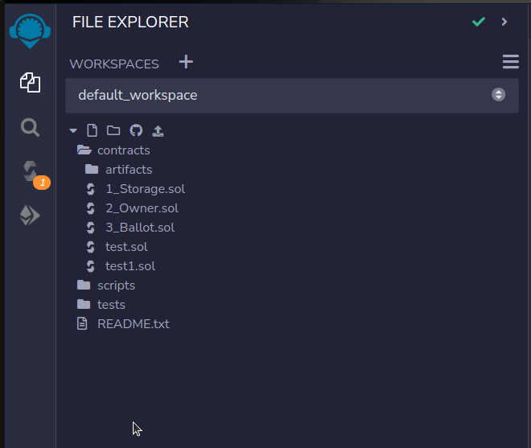
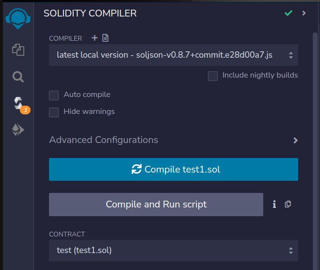
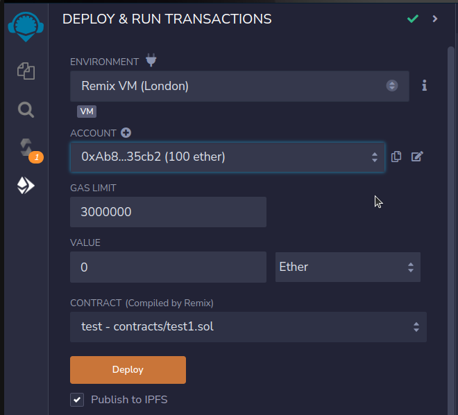
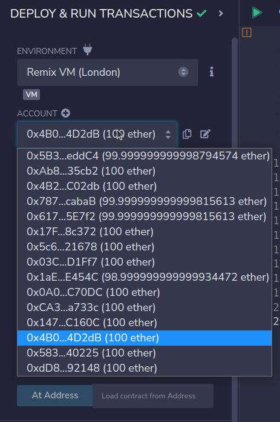
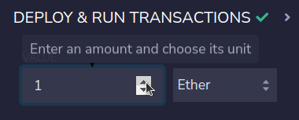
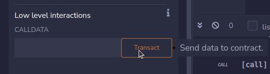
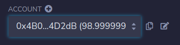
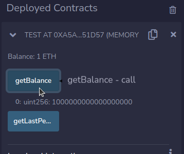
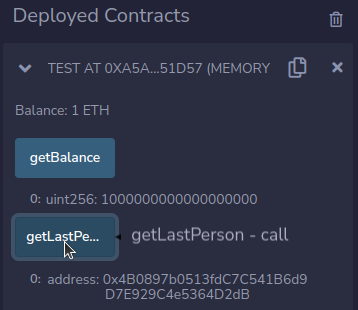
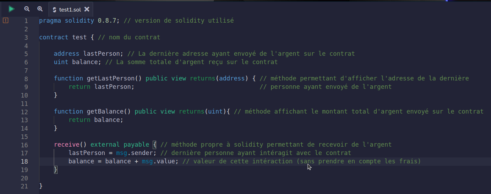

Solidity
Solidity est un langage orienté objet qui permet l'implémentation de smart contracts
Smart contracts
Définition
Les smart contracts, ou contrats intelligents, sont des programmes informatiques irrévocables, le plus souvent déployés sur une blockchain, qui exécutent un ensemble d’instructions pré-définies.
L’idée maîtresse derrière ce concept de smart contracts est de garantir la force obligatoire des contrats non plus par le droit, mais directement par le code informatique
Le smart contract propose en quelque sorte un équivalent informatique du contrat papier. Durant l’exécution du smart contract, toutes les étapes de validation sont enregistrées dans la blockchain utilisée (le plus souvent Ethereum), ce procédé permet de sécuriser l’ensemble des données en empêchant leur modification ou leur suppression a posteriori.
En pratique, l’immense majorité des smart contracts servent pour automatiser des échanges de valeur sous forme de cryptoactifs. Toutes les écritures comptables relatives à ces échanges de valeurs numériques sont systématiquement inscrites dans la blockchain. De sorte que tous les transferts d’actifs, soient à la fois publics, prévisibles et irrévocables. N’importe qui peut vérifier sur la blockchain la bonne exécution du smart contract et déterminer à qui l’actif.

Exemple d'un smart contract
Dans l’univers des assurances, les smart contracts pourraient grandement faciliter les processus et nous débarrasser de formalités administratives, souvent considérées comme trop lourdes en France. Prenons un itinéraire de vol Ryanair :
Imaginons qu’au lieu de payer son vol en euros et par carte bancaire, un utilisateur choisisse d’acheter son billet en cryptomonnaie, avec par exemple des jetons Ethereum. Cette action ouvre de nouvelles possibilités pour Ryanair qui peut recourir à la technologie du smart contract pour incorporer à la transaction une assurance sur la blockchain. Dès lors, les données relatives au trajet et au client sont associées à cet achat et donc stockées de manière sécurisée sur la blockchain (Nom ; Prénom ; Référence du vol ; Adresse électronique Ethereum).
Lors de l’acquisition de ce ticket, un contrat intelligent est créé entre Ryanair et le client, proposant d’indemniser l’utilisateur si un imprévu arrive durant le voyage. On imagine que le smart contract est directement connecté à une base de données fiable. Ryanair peut par exemple employer des technologies d’intelligences artificielles pour tenir à jour cette base de données. Dans cette dernière, les informations principales des trajets comme les incidents, retards et annulations sont répertoriées.

Si le voyage se déroule comme prévu, rien de spécifique ne se passe, l’utilisateur aura simplement payé son billet d'avion via un transfert de cryptomonnaies sur la blockchain. Cependant, si par exemple le trajet est supprimé, le client est automatiquement indemnisé sans avoir besoin de se lancer dans une procédure de remboursement. Le smart contract se met en marche automatiquement, car il détecte que la condition nécessaire à son exécution a été remplie.
Vous pouvez trouver ici quelques exemples de possibilités que pourraient permettre les contrats intelligents à l'avenir
Solidity
Solidity a été initialement proposée en août 2014 par Gavin Wood ; le langage a ensuite été développé par l'équipe Solidity du projet Ethereum, dirigée par Christian Reitwiessner.
Caractéristiques
Les bases
- Solidity est un type de langage orienté objet (OO) comme C ++ et C #.
- Il a été spécifiquement conçu pour développer des applications pour le réseau Ethereum.
- Un avantage de ce langage est que le code source des programmes créés avec lui est accessible publiquement depuis la blockchain. Même en bytecode, il est possible de le décompiler et d'obtenir un échantillon assez clair du code source original.
- Solidity prend en charge l'héritage et l'héritage multiple, lui conférant une grande souplesse lors de la programmation d'éléments complexes.
- Ce langage fournit également une série de bibliothèques très utiles qui facilitent la programmation de contrats intelligents, rendant le code réutilisable et plus facile à entretenir.
Solidity, ça marche comment ?

Les smart contract sont basés sur une blockchain (celle d'Ethereum par exemple dans la majorité des cas)
Les intéractions avec le contrat s'effectuent à partir de portefeuilles (wallet) en cryptomonnaie
Chaque portefeuille possède une adresse connue avec une valeur de 20 octets
Chaque intéraction avec le contrat intelligent coute du gas, c'est à dire des frais qui serviront à alimenter la blockchain (ils permettent la rémunération des mineurs)
Qu’est-ce qu’on peut faire avec Solidity ?
Au niveau des contrats, tout est envisageable. On peut imaginer toutes sortes d'échanges et de projets
Solidity permet donc, par exemple, de créer des NFTs, des jeux vidéo, des plateformes de DeFi, organiser des DAOs, et toutes autres formes de projets web3.
Tutoriel complet et détaillé
Installation et mise en place de l'environnement
a) Les differents compilateurs pour solidity
Il existe de nombreux moyens d'installer des compilateurs pour solidity.
- Via Node.js npm install -g solc
- Via docker
Solidity fournit des images dockers à jour pour le compilateur via l’image solc distribué par l’organisation ethereum
- Via des paquets linux
- Et également un compilateur supporté par le système macOS
b) Les différents outils pour tester nos contrats
Avant le déploiement final de nos contrats sur la blockchain, il faut pouvoir les tester. Pour se faire, il existe un grand nombre d'outils de tests
Deux exemples d'outils:
c) Le déploiement du contrat
Enfin, une fois notre contrat rédigé, compilé et testé il ne manque plus qu'à le déployer sur une blockchain.
Pour se faire, il existe des outils permettant de simuler des blockchain et des adresses afin de pouvoir travailler sur des versions locales de son contrat
Comprendre solidity par l'exemple
En tant que développeur, la meilleure façon de comprendre est de mettre la main à la patte. Alors il est temps de coder notre premier contrat intelligent !
Pour se faire, nous allons utiliser un outils proposé par ethereum rassemblant toutes les fonctionnalités décrite plus haut.
Il s'agit de REMIX un IDE en ligne, utilisé pour apprendre solidity et développer de simples contrats
REMIX possède:
Un gestionnaire de contrats
Un compilateur qui prend en compte toutes les versions de solidity
Une multitude de machines virtuelles permettant de simuler la blockchain éthereum et des wallet associés.
a) Le but du contrat
Nous allons développer un contrat très simple. Les utilisateurs pourront envoyer de l'argent dessus, obtenir l'adresse du dernier envoyeur et obtenir le montant total d'argent envoyé sur le contrat.b) Résultat
Afin de mieux comprendre ce qui est attendu, nous allons commencer par la fin.
Le contrat désormais codé, nous pourrons l'observer en détail un peu plus tard.
On choisit via REMIX une adresse ethereum de test. Elle possède 100 ether
On choisit le montant d'ether que nous allons envoyer à notre contrat, ici 1 ether
On effectue la transaction
On peut voir qu'il ne me reste que 98,99 éther dans mon portefeuille, soit 1 éther envoyé plus les frais de gas
Du coté du contrat en lui même, REMIX propose une simple interface avec deux boutons: getBalance et getLastPerson
Lorsque l'on clique sur getBalance nous pouvons voir que le contrat possède 1 éther dans sa balance, il s'agit de l'éther envoyé précédemment.
Lorsque l'on clique sur getLastPerson, nous obtenons bien l'adresse avec laquelle nous avons envoyé l'éther.
d) Le code
Nous avons pu voir comment fonctionnait REMIX, mais qu'en est-il du code derrière tout ça ?
Le code en lui même est plutôt simple, le langage se rapprochant de javascript. Quelques précisions sont tout de même nécéssaires:
- L'attribut view ligne 8 et 12 est un attribut propre à REMIX, il lui permet de lui indiquer que la méthode doit avoir une interface avec lequel l'utilisateur intéragira et dont le résultat sera également affiché, c'est ce qui est affiché sur la capture d'écran précédente
- Le type address est un type propre au langage solidity, il fait référence aux adresses éthereum, une variable de type address est par défaut égale à 0x0000000000000000000000000000000000000000
Conclusion
a) Le rêve du web3
Le web3 et tout ce qui en découle fait rêver, bien qu'il ait son lot de détracteurs comme de fidèles, le développement et les avancées des technologies blockchain sont indéniables. Solidity est le rapport à la réalité de tout ce monde légèrement fantasmé, Le langage, lui, est bien réel et le développement des smart contracts de plus en plus accessible.
Pour ceux qui croient en l'avenir des technologies blockchain et du web3, solidity est pour un développeur une bonne façon d'entrer dans ce futur marché au potentiel encore trop peu connu et quasi-infini. Bien que l'avenir de ce monde soit encore trop incertain, l'accessibilité de Solidity, proche de celle de javascript, est trop grande pour être ignorée. Peut-être que dans 10 ans, toutes les choses que l'on connaît aujourd'hui se baseront sur la blockchain et des langages comme Solidity.
b) Retour à la réalité
Maintenant, revenons un peu sur terre.
Peu importe ce qui est réservé à ce monde, Solidity est un langage de plus en plus solicité par les entreprises, le langage étant encore peu connu et peu pratiqué, il peut être une bonne idée de s'y intéresser, déjà d'un point de vue de veille technologique, ensuite pour le marché du travail, sur lequel la demande est grandissante.
Bibliographie
commentcoder.com: site très intéressant et très complet avec beaucoup de tutoriels
Documentation officielle de solidity: Très complète et traduite dans de multiples langages
https://fr.wikipedia.org/wiki/Solidity https://journalducoin.com/ethereum/solidity-langage-ethereum/ https://www.youtube.com/watch?v=xtEQGtaT9MY&list=PLBV4f2pTYexqgdiVpLOWlF-E5sTLPimot